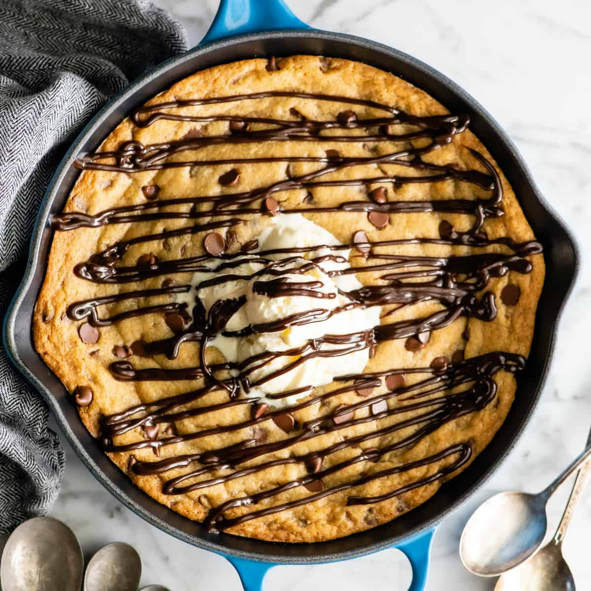

Chocolate Chip Skillet Cookie (Pizookie Recipe)
| Ingredients |
1x Amount |
2x Amount |
3x Amount |
| Softened Salted Butter |
1/2 Cup |
1 Cup |
1 1/2 Cups |
| Light Brown Sugar |
1/2 Cup |
1 Cup |
1 1/2 Cups |
| Granulated Sugar |
1/2 Cup |
1 Cup |
1 1/2 Cups |
| Egg (room temp) |
1 |
2 |
3 |
| Pure Vanilla Extract |
1 Teaspoons |
2 Teaspoons |
3 Teaspoons |
| Whole Milk (room temp) |
2 Tablespoons |
4 Tablespoons |
6 Tablespoons |
| All-Purpose Flour |
1 1/4 Cups |
2 1/2 Cups |
3.8 Cups |
| Fine Sea Salt |
1/4 Teaspoon |
1/2 Teaspoon |
0.8 Teaspoon |
| Baking Soda |
1/2 Teaspoon |
1 Teaspoon |
1 1/2 Teaspoons |
| Baking Powder |
1/4 Teaspoon |
1/2 Teaspoon |
0.8 Teaspoon |
| Chocolate Chips + extra for the top |
1 Cup |
2 Cups |
3 Cups |
Instructions
- Preheat oven to 350 degrees F.
- Lightly grease a 10" cast iron skillet. Set aside.
-
Cream together butter, brown sugar, and granulated sugar in the bowl of a standing mixer
fitted with the paddle attachment, or in a large mixing bowl with a hand-held mixer.
- Add egg, milk, and vanilla, and beat until combined.
-
Add flour, sea salt, baking soda, and baking powder. Beat, starting on low speed and
increasing to high as the dry ingredients get incorporated. Beat until a slightly stick
dough form.
- Add chocolate chips and stir in by hand.
- Pour batter into the prepared cast iron skillet.
- Use a greased spatula to evenly spread out the cookie dough in the skillet.
- Sprinkle a handful of extra chocolate chips on top (if desired).
-
Bake for 15 minutes, or until the sides are just browning/set and the middle is still
slightly jiggly. Please do not over-bake. Remember
the skillet cookie will continue to bake after it is removed from the oven.
- Let cool for 5-10 minutes.
- Serve warm with ice cream and a drizzle of chocolate sauce!